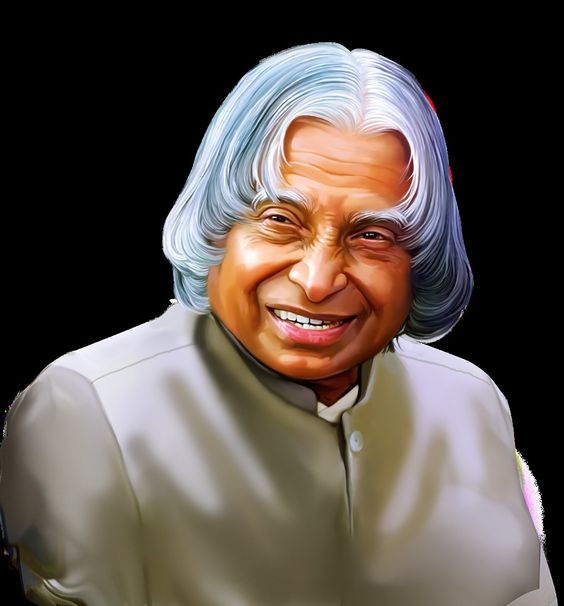

Dr Avul Pakir Jainulabdeen Abdul Kalam

Great personalities are not born every day; they are born once in a century and are remembered for millennials to come. One such great personality that we will always be proud of is Dr. APJ Abdul Kalam. His full name was Avul Pakir Jainulabdeen Abdul Kalam, born in Rameswaram of Madras Presidency on 15th October 1931 and died on July 27, 2015, Shillong. He was an Indian Scientist and also a politician leader, who later became the 11th President of India. He played an important role in the development of India’s missile and nuclear weapons program.Dr. A P J Abdul Kalam's Biography - About His Family and Struggle Life.
Dr. A P J Abdul Kalam was born to a poor Tamil Muslim family. He lived with his family in the temple city of Tamilnadu, Rameswaram, where his father, Jainulabdeen, had a boat and was an imam of a local mosque. At the same time, his mother, Ashiamma, was a housewife. Kalam had four brothers and one sister in his family, from which he was the youngest. Kalam's ancestors were wealthy traders and landowners and had vast land and property tracts. But with time, their business of ferrying pilgrims and trading groceries suffered huge losses due to the Pamban Bridge's opening. As a result, Kalam's family had become inadequate and struggled hard to make a living. At a tender age, Kalam had to sell newspapers to supplement his family income.
Educational Background
Although Kalam had average grades in school, he was very hard working and had an immense desire to learn. He spent a lot of time studying and had developed a particular interest in mathematics. Kalam left Schwartz higher secondary school after completing his early education and went to Saint Joseph's College, Tiruchirapalli. From Saint Joseph's College, he graduated in physics in 1954. He moved to Madras in 1955 to study aerospace engineering at Madras Institute of Technology.
Being youngest among the 5 siblings of a sister and 4 brothers, he completed his schooling at the Rameshwaram Elementary School. Teachers recognized him as an average but very hard-working and dedicated student. He was particularly fond of mathematics and would spend hours on end solving sums and wrapping his head around mathematical concepts and their genesis.
As a Scientist
Kalam joined as a scientist in the aeronautical development establishment of DRDO in 1960, after graduation. His career started with him designing a small hovercraft. However, he was not convinced by his choice of a job at the DRDO. Kalam was transferred to ISRO in 1969, where he was the project director of India's first satellite vehicle launch. The satellite vehicle deployed the Rohini satellite successfully in near-Earth orbit in July 1980. Kalam received the Government's LV and Slv projects between the 1970s-90s. He directed two projects like Project Devil and Project Valiant, which aimed at developing ballistic missiles from the successful SLV program's technology Kalam somehow convinced Indira Gandhi and sought secret funds for these aerospace projects. His research and immense knowledge brought him and the nation great laurels in the 1980s.
As the 11th President of India
Sir Kalam was entitled to be the 11th president of India. His term period of 25th July 2002 to 25th July 2007 was achieved by winning a presidential election in 2002 with a massive margin of votes. National Democratic Alliances’ nominated him to be president and it was supported by Samajwadi Party and National Congress Party. He was lovingly called as peoples’ president as he had done uncountable works for the welfare of the people and through the entire country.
He was brave and courageous enough to take decisions and implement them no matter if that was tough or sensitive or highly controversial. The “office of profit” is perhaps the hard Act that he had to sign. The “office of profit”, according to the English Act of Settlement in 1701 explains that no single individual who has a professional set up under the royal family, who has some kind of provision with or who is taking a pension from the prince has the right to work for the of the “House of Commons”. This will allow the royal family to have zero influence on the administrative conditions.
He had also become one of the most talked-about presidents Rule in 2005 for imposing the Presidents’ rule in Bihar. Kalam expressed his wish to take up the position one more time but then later changed his mind.
In 2012, he introduced a program called “What Can I Give?” focusing on the theme of eradicating corruption from the country.
Writings
Dr. Abdul Kalam was a person who was not only a great political leader but also a good teacher and a writer. He had many delicate qualities and visionaries. He always had an excellent dream for the country's development and realized that the youth can bring revolution. During his university career, he inspired many of the students through his inspirational speech and tremendous visionaries.
Some of them are:
1.Developments in Fluid Mechanics and Space Technology
2.A Manifesto for Change
3.Wings of Fire: An Autobiography
4.Forge your Future: Candid, Forthright, Inspiring
5.Turning Points: A journey through challenges
6.India 2020: A Vision for the New Millennium
7.Indomitable Spirit
8.The Luminous Sparks
9.Reignited: Scientific Pathways to a Brighter Future
10.You Are Born To Blossom
As a motivational speaker
He taught the youth to not only handle success but also how to handle failures. He said that the management of the failure is very important as there will be problems and failures in whatever one does. According to him, learning leads to creativity, creativity leads to thinking, thinking provides knowledge and knowledge makes you successful. The ones who dare to dream the impossible are the ones who break the chains of all the human limitations. Although being from a science background, he also gave equal importance to all the courses of study and profession and he believed that one who can think and work beyond the imaginations are the ones who achieve the actual success in life. Mr. Kalam never failed to ignite hope and give motivation and strength to the young.
Here are some inspiring quotes by Dr. Kalam
1."You have to dream before your dreams can come true"
2."Excellence is a continuous process and not an accident"
3."Life is a difficult game. You can win it only by retaining your birthright to be a person"
4."Man needs his difficulties because they are necessary to enjoy success"
5."Those who cannot work with their hearts achieve but a hollow, half-hearted success that breeds bitterness all around"
Some Interesting Facts
1.His full name was Avul Pakir Jainulabdeen Abdul Kalam.
2.He was born in a Tamil Muslim Family.
3.Kalam was a vegeterian. In his words “I was forced to become a vegetarian due to financial constraints, but I eventually came to enjoy it.” Today, I am a complete vegetarian”
4.He was India’s first bachelor President.
5.He was very popular among children.
6.Kalam’s autobiography "Wings of Fire" was initially published in English Language but then later published in 13 other languages.